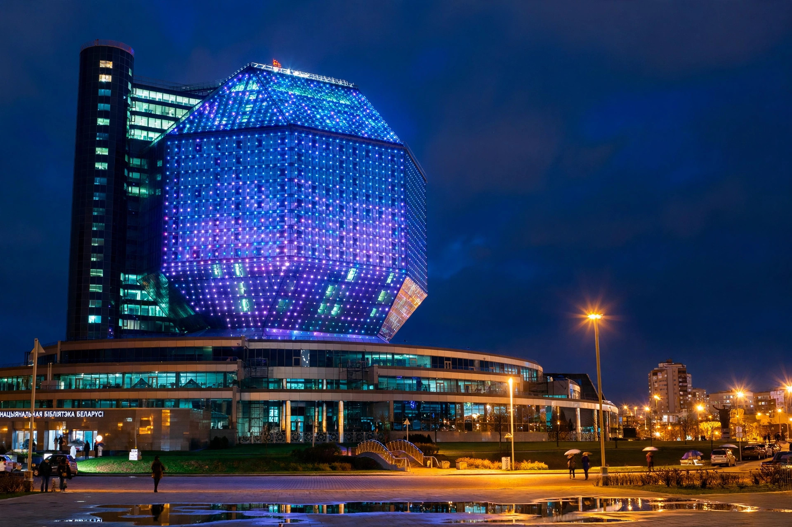

National Library of Belarus
| National Library of Belarus | |
|---|---|
| Established | 1922 |
| Location | Minsk, Belarus |
| Collection | c. 9–10 million items |
| Building opened | 2006 (new building) |
The National Library of Belarus (Belarusian: Нацыянальная бібліятэка Беларусі) is the national library of Belarus, located in the capital Minsk. Founded in 1922, it is the country's largest library and copyright depository, and is famous for its distinctive rhombicuboctahedron-shaped building, a symbol of modern Minsk.

1. History
2. The new building
3. Collections
History
The library was founded in 1922 as the library of the Belarusian State University and became the State Library of the BSSR, named after Lenin. Its collections suffered catastrophic losses during the Second World War, when much of Minsk was destroyed.
The new building
The new building, designed by architects Mikhail Vinogradov and Viktor Kramarenko, opened in 2006. Its main volume is a rhombicuboctahedron — the "diamond of knowledge" — 73 metres tall with 23 floors, faced with panels that light up in changing colours and patterns at night. An observation deck on the roof overlooks Minsk.
Collections
The library holds roughly nine to ten million items, including a notable collection of old printed books and Francysk Skaryna editions, and serves as the national bibliographic centre of Belarus.
See also: Minsk · Belarus · National library